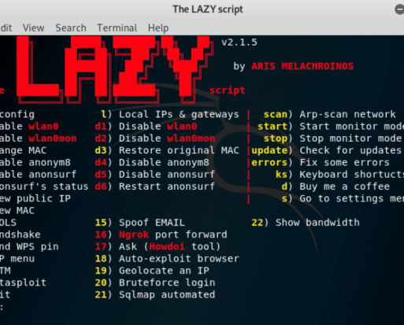

close
Back
𝘾𝙮𝙗𝙚𝙧𝙍𝙞𝙜
If you have any questions or need help join our discord server and message Rigby#3436
Join discord server.
Script
NOT MADE BY ME | This script was made by arismelachroinos
Arismelachroinos github
_____________________________________________________
Lazy Script

Commands To Install LazyScript
apt-get install git
git clone https://github.com/arismelachroinos/lscript.git
cd lscript
chmod +x install.sh
./install.sh
Open another terminal and type "l" then press enter.
Commands To uninstall LazyScript
cd /root/lscript
./uninstall.sh
rmdir -r /root/lscript